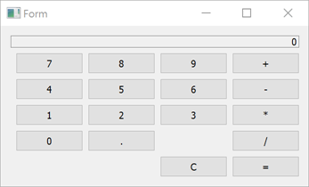

Qt SCXML Calculator Example
A widget-based application that implements the Calculator example presented in the SCXML Specification.

Calculator uses Qt SCXML to implement the Calculator Example presented in the SCXML Specification.
The state machine is specified in the statemachine.scxml file and compiled into the CalculatorStateMachine class. The user interface is created using Qt Widgets.
Running the Example
To run the example from Qt Creator, open the Welcome mode and select the example from Examples. For more information, visit Building and Running an Example.
Compiling the State Machine
We link against the Qt SCXML module by adding the following line to the .pro file:
QT += widgets scxml
We then specify the state machine to compile:
STATECHARTS = ../calculator-common/statemachine.scxml
The Qt SCXML Compiler, qscxmlc, is run automatically to generate statemachine.h and statemachine.cpp, and to add them to the HEADERS and SOURCES variables for compilation.
Instantiating the State Machine
We instantiate the generated CalculatorStateMachine class in the calculator-widgets.cpp file, as follows:
#include "statemachine.h" #include "mainwindow.h" #include <QApplication> int main(int argc, char **argv) { QApplication app(argc, argv); CalculatorStateMachine machine; MainWindow mainWindow(&machine); machine.start(); mainWindow.show(); return app.exec(); }
Connecting to Active Properties
After instantiating the state machine, we can connect to the active properties of the states, as follows:
connect(ui->digit0, &QAbstractButton::clicked, [this] {
m_machine->submitEvent("DIGIT.0");
});
connect(ui->digit1, &QAbstractButton::clicked, [this] {
m_machine->submitEvent("DIGIT.1");
});
connect(ui->digit2, &QAbstractButton::clicked, [this] {
m_machine->submitEvent("DIGIT.2");
});
The state machine can notify other code when events occur:
<transition event="DISPLAY.UPDATE">
<log label="'result'" expr="short_expr==''?res:short_expr" />
<send event="updateDisplay">
<param name="display" expr="short_expr==''?res:short_expr"/>
</send>
</transition>
We connect to the updateDisplay event to display the data passed by the events:
m_machine->connectToEvent(QLatin1String("updateDisplay"), this,
[this](const QScxmlEvent &event) {
const QString display = event.data().toMap()
.value("display").toString();
ui->display->setText(display);
});